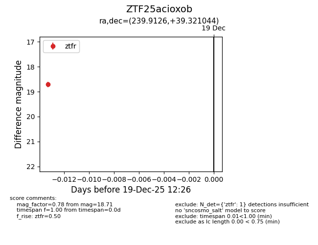
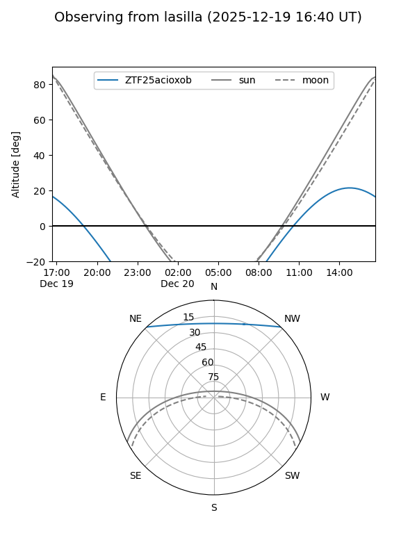
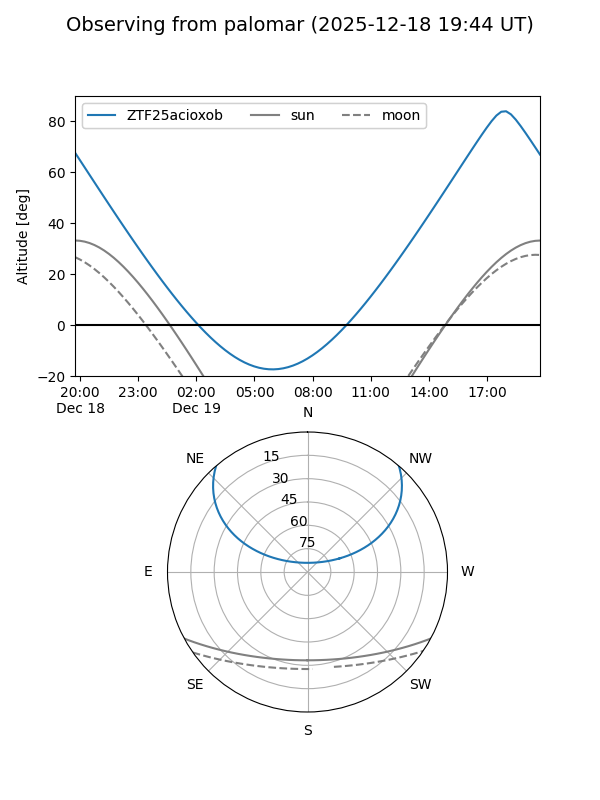

ZTF25acioxob
Target ZTF25acioxob at 2025-12-19 12:27
Aliases and brokers:
FINK: fink-portal.org/ZTF25acioxob
Lasair: lasair-ztf.lsst.ac.uk/objects/ZTF25acioxob
ALeRCE: alerce.online/object/ZTF25acioxob
alt names
ZTF25acioxob (ztf,fink_ztf)
Coordinates:
equatorial (ra, dec) = 239.9126,+39.32104
equatorial (HMS+DMS) = 15:59:39.03,+39:19:15.76
galactic (l, b) = (62.6794,+49.29087)
Flags:
Photometry:
last ztfr=18.71
1 ztfr detections
Lightcurve

Visibility


Additional plots